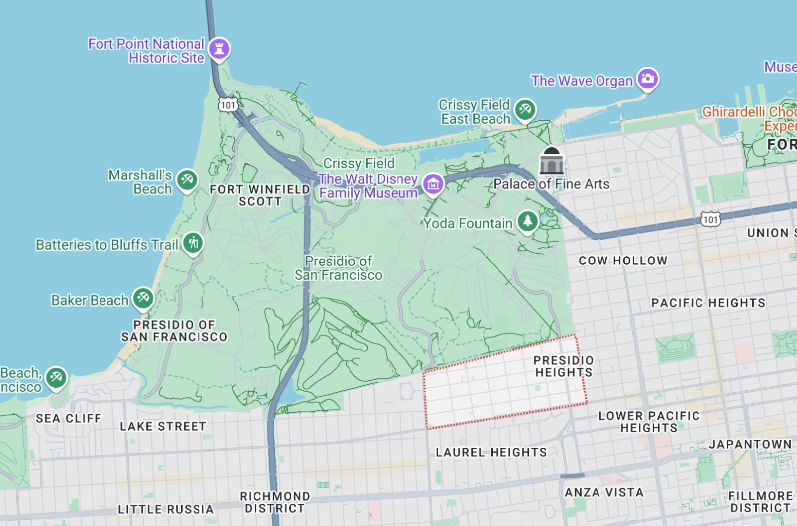
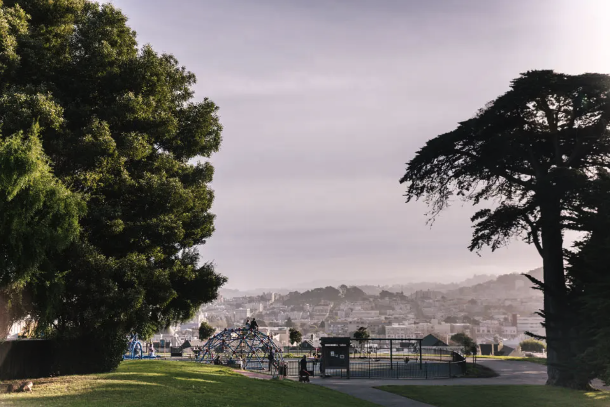
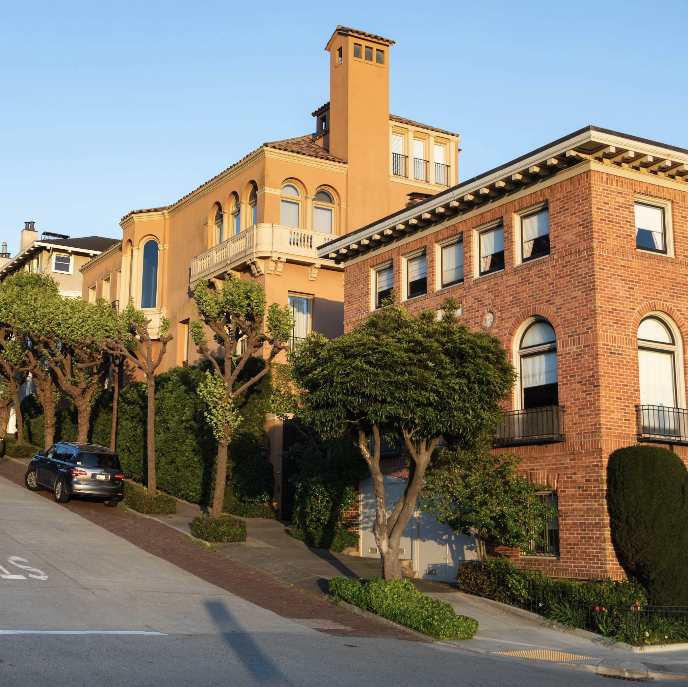
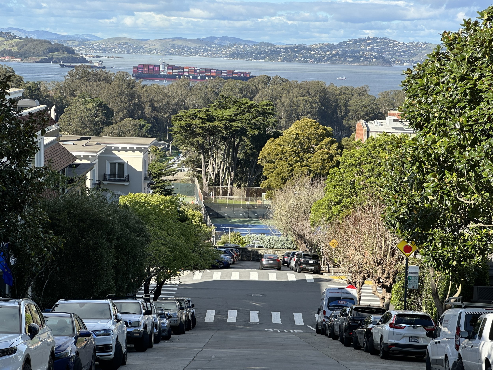

Welcome to Presidio Heights
A prestigious, serene neighborhood at the edge of San Francisco's most beautiful parks, connected by neighbors who care deeply about its future.
At the Heart of the City
Parks, village streets, and sweeping views, all close to home.
Presidio Heights sits between the Presidio, Laurel Village, Sacramento Street, and Alta Plaza, with easy access to the city's north side.



